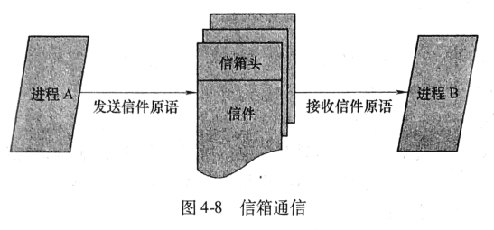

操作系统
Table of Contents
第一章-操作系统概述
操作系统分类
操作系统从早期到如今发展了很久，下面介绍从早到如今的操作系统类别
批处理操作系统
批处理操作系统是操作系统发展时代的早期产物，其工作方式是:
基本工作方式
用户将作业交给系统操作员，系统操作员收到后一定数量的作业后将其组成一批作业，再将其输入到计算机中，随后计算机自动、依次执行每个作业，最后由系统操作员将结果返还给用户。
特点与分类
成批处理。
- 缺点
运行时，如果出错则无法及时更正，必须在修改后重新排队运行，开发时长过长。
- 优点
系统资源利用率高，作业吞吐率高。
SPOOLing技术
为了提高硬件资源的利用率，人们在监控程序中间引入了缓冲技术和多道程序设计的概念。使得简单的批处理系统发展为更为高级的多道批处理系统。
SPOOLing(Simultaneous Peripheral Operating On-Line)技术全称为“同时的外部设备联机操作”，基本设计思想是用磁盘设备作为主机的直接输入输出设备，主机直接从磁盘上选取作业运行，作业的执行结果也存储在磁盘上；
分时系统
分时系统是为了弥补批处理方式不能向用户提供交互式快速服务的缺点而出生的。
基本工作方式
一台计算机连接了若干个终端，每个终端可由一个用户使用，用户使用终端交互式地向系统提出命令请求，系统接受用户的命令之后，采用时间片轮转方式处理服务请求，并且通过交互式的方式在终端上向用户显示结果。
设计思想
分时操作系统将处理器运行时间划分为多个小片段，称为时间片。每个时间片极快，处理器将会依次处理这些时间片的命令，由于速度极快，用户通常无法感受到卡顿。
特点
交互性，“独占”性，及时性，多路性
- 多路性 多用户同时使用一台计算机。
- 交互性 用户根据系统响应的结果提出下一个请求。
- 独占性 每个用户只能感受到计算机只为他一人服务。
- 及时性 计算机能及时对用户提出的请求给予响应。
实时操作系统
RTOS(Real Time Operating System)实时操作系统，具有高度可靠性，其使计算机在规定时间内，及时响应外部事件的请求，同时完成对该事件的处理，并且能够控制所有实时设备和实时人物协调一致地工作。 实时操作系统是较少有人为干预的监督和控制系统
- 主要目标
在严格时间范围内，对外部请求做出反应，系统具有高度可靠性。
- 硬实时系统
是指对关键外部事件的响应和处理时间有着极其严格的要求，例如火箭和导弹控制，这些如果出现延迟可能会造成严重的不良后果。
- 软实时系统
是指对外部时间的响应和处理时间有一定的要求，不过在不满足要求时只会影响服务质量，而不会造成严重的后果，例如视频处理，等。
- 实时操作系统必备功能
- 实时时钟管理
实时任务根于时间要求分为两类:
- 定时任务 再周期严格按照指定的时间间隔重复运行。
- 延时任务
非周期内重复运行，有时间界限，根据任务功能不同分为两类:
- 主动式 根据时间间隔主动运行，例如实时监控。
- 从动式 依赖外部事件的触发运行。
- 过载防护 如果遇到大量实时任务，可能会超出系统的处理能力，那么就需要及时分析并找出最重要的实时任务，将次要任务延期或抛弃以保证最重要任务的执行。
- 高可靠性 要求实时操作系统具有很强的健壮性，坚固性。不仅要求软件系统也要对硬件系统做严格的要求。
- 实时时钟管理
实时任务根于时间要求分为两类:
嵌入式操作系统
嵌入式操作系统运行在嵌入式芯片环境中。 其优点是:
- 高可靠性
- 实时性
- 占有资源少
- 智能化能源管理
- 易于连接
- 低成本
嵌入式操作系统可根据需求对系统的功能进行裁剪、调整、和生成。 嵌入式操作系统主要应用在工业监控、智能化生活空间（家电）、通信系统、导航系统等。
个人计算机操作系统
个人计算机操作系统(Personal Computer OPertaing System)，是一种单用户多任务的操作系统。 其特点是:
- 可供个人使用
- 功能强
- 价格便宜
网络操作系统
网络操作系统(Network Operating System)基于计算机网络。 用于将计算机网络上的各个计算机连接，目的是互相通信，资源共享。 计算机网络分为两大模式:
- 集中式
运算由主机处理，多个终端仅作为输入/输出设备使用。
- 分布式
每台计算机都做运算处理，通过网络进行数据交换和资源共享服务。分布式还能共享运算处理能力。
分布式操作系统
分布式操作系统(Distributed System)由大量计算机通过网络连结起来。 特点:
- 多台主机使用相同的操作系统。
- 实现资源的深度共享。
- 透明性。分布式操作系统在用户眼里是一台具有强大功能的计算机系统。而网络操作系统则会感觉到本地主机和非本地主机之间的区别。
- 自治性 分布式系统中的每台主机没有主从关系，一个主机失效一般不会影响其他主机。
操作系统设计
本小节谈谈操作系统的设计开发所面临的问题，以及对操作系统的设计阶段、设计目标及结构设计做探讨。
设计操作系统中面临的困难:
- 设计复杂程度高
主要表现在:
- 程序长
- 接口信息多
- 动态性强
- 并行性强
- 正确性难以保证 由于操作系统包含的功能巨大，并且对各种外部设备提供的接口复杂，导致源码的正确性难以保证，目前操作系统的正确性主要依靠软件开发的规范保证。
- 研制周期长 由于操作系统的复杂性，研发周期会随之变长。
操作系统的设计过程
由三个过程涵盖，并且每方面是互相渗透，不能截然分开。
- 功能设计 根据操作系统的设计目标和使用要求，确定所需要具备的功能。
- 算法设计 根据计算机的性能和操作系统的功能来选择和设计满足系统功能的算法和策略、并且分析和估算其效能。
- 结构设计 根据系统的功能和特性要去，选择合适的结构。使得系统结构清晰、简明、可靠、易读、易修改，并且使用方便，适应性强。
操作系统的设计目标
作了解即可。
操作系统的结构
作了解即可。
第二章-操作系统运行环境
处理器
处理器的构成与基本工作方式
| 组成 | 作用 |
|---|---|
| 运算器 | 实现指令中的算术和逻辑运算 |
| 控制器 | 控制程序运行的流程(取指令、维护处理器状态、处理器与内存的交互) |
| 寄存器 | 暂存处理器执行指令过程中的数据、地址及指令信息（速度最快） |
| 高速缓冲 | 为了解决CPU与内存速度不匹配的问题 |
处理器中的寄存器
指令执行的基本过程
两个步骤:
- 读取 处理器从存储器读取指令，并自动根据指令类别将PC的值变成下一条指令的地址
- 执行 将取到的地址存储在IR中，随后由处理器解释执行指令。
五个指令类别:
- 访问存储器指令 作用: 处理器和存储之间数据传输
- I/O指令 作用: CPU和I/O模块之间的数据传输及命令发送
- 算术逻辑指令 作用: 执行数据相关的算术和逻辑操作
- 控制转移指令 作用: 指定新指令的执行起点
- 处理器控制指令 作用: 修改处理器状态，改变处理器工作方式
特权指令
- 解释 只能由操作系统使用的指令。
- 如何工作 由于普通用户无法直接使用特权指令，所以如果一个用户程序需要使用特殊指令，将引起一次处理器状态的切换，随后CPU通过特殊的机制，将CPU状态切换到OS运行的特权状态，随后将处理权移交给OS的一段特殊代码，这个过程被称为陷入(Trap)
非特权指令
操作系统和用户程序都能使用的指令。
处理器工作状态
管态和目态
- 管态
指OS管理程序运行的状态，有较高的特权级别
- 别名
- 内核态
- 特权态
- 系统态
- 别名
- 目态
指用户程序运行时的状态，有较低的特权级别
- 别名
- 用户态
- 普通态
- 别名
- 其他种类的状态 有些特殊的系统将处理器工作状态分为核心状态、管理状态、用户程序状态
处理器工作状态的转换
- 目态到管态的转换 通过中断实现。中断响应时交换中断向量，随后将新的中断向量的PSW(程序状态字)的CPU状态位标志为管态。
- 管态到目态的转换 通过设置PSW指令转换。
- 其他 CPU处理管态可执行任何指令，而处于目态时不允许执行特权指令。计算机启动时，CPU的初始状态为管态，随 后加载OS。OS退出执行后，用户程序在目态执行。
限制用户程序执行特权指令
当CPU处理用户程序时，应当在目态下工作，若出现意外用户程序取得特权指令，CPU会拒绝执行，并触发“非法操作”事件，随中断机制捕获该事件后，转交至OS处理，例如由OS通知用户程序：“程序中有非法指令”
程序状态字(PSW)
为了控制好OS与用户程序的可使用指令权限级别，CPU引入了管态和目态两种状态，而PSW用于标记当前CPU应当以什 么状态运行。 PSW通常具有以下状态代码:
- CPU工作状态代码 指明CPU的工作状态。
- 条件码 执行指令后的结果特征
- 中断屏蔽码 指明是否需要中断
PSW在不同的CPU下有不同的格式，其包含的信息也不同，常见的程序状态字信息有:
- CF
- 进位标志位
- ZF
- 结果为零标志位
- SF
- 符号标志位
- OS
- 溢出标志位
以上四个是基本标准标志位，下面还有一个特殊的标志位
- TF
- 陷阱标志位
- IF
- 中断屏蔽标志位
- VIF
- 虚拟中断标志位
- VIP
- 虚拟中断待决标志位
- IOPL
- IO特权级别
计算机系统硬件部件
存储系统
存储器的类型
- RAM(Random Access Memory随机访问内存) 随时可写可读的存储器，主要作用是存储需要随机存取的程序的数据
- ROM(Read-Only Memory只读访问内存) 通常只能读取的存储器，想要写入比如使用特殊方式。
- PROM 一种可编程只读存储器，用户使用特殊的PROM写入器向其中写入数据
- EPROM 特殊的存储器，由特殊设备紫外线光照形变用擦除和写入数据。
存储分块
- 二进制位
- 存储数据最小单位 0/1
- 字节
- 存储器最小编址单位 1字节=8个二进制位
- (no term)
- 硬盘 存储量较大，可达到2TB~8TB
有些计算机系统将存储器分成块，每个块的随机读写区域大小不同，例如512KB\1KB\8KB等，每个块被称为物理页(Page)
存储器的层次结构
设计存储器的三个考虑要点:
- 容量
- 速度
- 成本
- 容量、速度和成本的匹配
容量、速度、成本这三者无法兼得，容量大，速度慢，成本低，速度快，容量小，成本高。
- 存储访问局部性原理
由于现代程序设计技术大量采用程序代码复用，所以一旦进入这些程序段，OS就会存取相同的指令集合。 总的来说就是速度快的存储器，CPU更愿意使用它，因为这样更快。
 基于这一原理，就有充分的理由设计出多级存储的体系结构，并使得存储级别较低的存储器的比率小于存储级别较高的存储器的比率
基于这一原理，就有充分的理由设计出多级存储的体系结构，并使得存储级别较低的存储器的比率小于存储级别较高的存储器的比率
- 存储器保护
为了防止数据安全，健全性，必须实现存储保护，并且存储保护必须会有硬件的支持。 常见的存储保护技术:
- 界地址寄存器 这是一种较为易于实现的保护技术，其实现是为某程序的内存设置一对由界限寄存器保存的下限和上限内存地址，或者 是直接将一个寄存器作为基址寄存器，另一个则作为限长寄存器，当CPU访问内存时，硬件会自动将被访问内存地址与界 限寄存器的内容比较，判断是否越界，如果越界则中断，否则正常运行。
I/O部件
I/O结构
- 原理 一台计算机有大量的外部设备，这些设备会进行I/O操作，为了对这些设备进行控制，提高处理器与外部设备的运行效率，出现各种不同的I/O硬件结构。 每个外部设备都有一个I/O设备控制器，早期的计算机系统，外部设备的控制器通过I/O硬件结构与CPU连接，CPU会以周期形式轮询每个I/O设备控制器的状态，当发现有I/O处理请求，CPU及处理，直到处理完毕，CPU才会执行其他指令。
- 缺陷 CPU为了处理I/O设备控制器的请求，必须花费时间轮询它们，这样效率太低，已经淘汰。
通道
通道主要在大型机系统上使用，其原理:
- 原理 其替代了CPU对I/O操作直接控制的方式。 CPU按照程序执行顺序依次执行指令，若执行到启动I/O指令时，将使用指令附带的参数启动指定的设备，随后将其控制权转交给通道，通道会控制外部设备的有关操作。 这样的I/O结构就实现了CPU与外部设备的并行工作。
- 特点
- 通道是独立于中央处理器的，专门负责数据I/O传输工作的处理单元。
- 通道技术一般用于大型机系统和对I/O处理能力要求比较严格的系统中。
DMA(Direct Memory Access)技术
- 原理 DMA技术将数据成块的在内存和外部设备之间传输，例如当处理器需要读写一整块数据时，DMA控制单元发送命令，命令包含了外部设备的编址，需要读写的内存编址以及传输的数据长度，是否请求一次读或写等信息。 随后这些外部设备就都由DMA控制单元控制，CPU就不需要采理了(除了结束和开始)。
- 特点
- DMA技术通过系统总线中的独立控制单元————DMA控制器，自动地控制成块数据在内存和I/O单元之间的传送。
缓冲技术
- 用途
- 外部设备与外部设备之间通信
- 外部设备与CPU之间通信
- 原理 当需要输入输出数据时，先将数据放置缓冲器内，随后CPU再处理缓冲区内的数据。
- 根本原因 CPU处理速度与设备传输速度不相匹配。
时钟部件
时钟部件的作用:
- 多道程序运行环境中，为系统发现陷入死循环的错误，防止资源浪费
- 分时系统中，周期制地运行各个时间片的作业。
- 实时系统中，根据指定间隔时间输出正确时间信号给实时控制设备
- 定时唤醒事先指定时间执行的外部事件
- 记录用户使用设备日志
- 记录用户和系统所需要的绝对时间，年月日。
硬件时钟
主要用于绝对时间
- 原理 根据电路中的晶体振荡器，周期性的产生固定的脉冲频率，时钟电路中的时钟寄存器一句时钟电路所产生的脉冲数，对时钟寄存器进行加1的工作。
软件时钟
主要用于相对时间
- 原理 利用内存单元模拟时钟寄存器，并采用一段程序计算相应的脉冲数，对内存时钟寄存器进行加1减1的工作，从而模拟了时钟的功能。
两种时钟的对比
- 软件时钟(相对时钟) 相对时钟只计算某一时间初值开始的一段时间间隔。
- 硬件时钟(绝对时钟) 绝对时钟不受外界干扰，计算关机也不会停止，并且十分准确。
中断机制
这一节很重要。 中断机制依赖硬件支持。
中断与异常的概念
中断与异常
- 中断的概念
- 中断的定义 中断是指CPU对OS中或OS外发生的异常事件的响应。 异常事件是指 无一定时序关系发生的随机事件，例如出错。
- 中断的含义
中断将会打乱CPU正常工作次序，并要求CPU处理某一事件的手段。
引起中断的事件称为中断事件或中断源；
- 中断源 中断源向处理器发送请求信号叫做中断请求;
- 中断处理程序 处理中断事件的程序称为中断处理程序；
- 中断断点 发生中断时暂停正在执行的程序的点叫做中断断点；
- 中断响应 CPU暂停当前程序转而处理中断的过程称作中断响应；
- 中断返回 中断处理结束之后恢复原本程序的执行称作中断返回；
- 中断字 一个计算机系统提供的中断源的有序集合；
- 中断向量表 使得中断装置能找到恰当的中断处理程序;
- 中断向量 中断向量表中的每个项，由PSW和PC的指组成
- 中断技术的作用
解决了主机和外设并行工作的问题，消除了因外设的慢速而使得主机等待的现象，为多机操作和实时处理提供了硬件基础。
- 提高CPU使用效率 输入输出设备可通过发起中断请求与CPU通信，提高了效率，不用CPU不断的查询和等待了。
- 提高OS的实时能力 可以通过中断的能力使得一些实时需求较高的程序能立即被CPU执行。
- 异常
异常跟中断早期是一个概念，后来区分开来。 异常是正在执行的指令引发的，而中断是由外部事件引发的。
中断与异常的分类
典型的中断包括:
- 时钟中断 由CPU内部的计时器产生，用来让OS周期性的执行函数。
- 输入输出(I/O)中断 由I/O控制器产生，用于通知一个I/O操作完成或发生的错误。
- 控制台中断 由OS操作员通过控制台发出命令。
- 硬件故障中断 由掉电、存储器校验错误引起。
典型的异常包括:
- 程序性中断 在特殊条件下由指令执行结果引发，例如零作被除数，目态程序试图执行特权指令。
- 访管指令异常(自愿性中断) 用于使OS提供OS服务
中断系统
中断系统由硬件和软件结合，可把其分为两大组合: 中断系统的硬件中断装置和软件中断处理程序。
中断请求的接收
中断系统通过硬件的中断逻辑线路和中断寄存器实现接受中断源的请求。
- 中断逻辑线路 其用于接受中断信号，将接收到的中断信号存在其硬件触发器中，中断逻辑线路中有若干个专门接受中断信号的触发器，每个触发器称为一个中断位。如果中断位的值为1则代表收到中断信号，0则为无中断信号。
中断响应
简单来说分为五步
- CPU接收中断信号
- 保护现场，将中断断点的PSW和PC值存入系统堆栈
- 分析中断向量，取得中断处理程序的入口地址
- 将CPU的PC值设置为中断处理程序的入口地址
- 调用中断处理程序
中断处理
中断处理程序工作步骤:
- 检查I/O相关的状态信息
- 操纵I/O设备或在设备和内存之间传送数据
- 根据中断请求的类别和需求不同有不同的做法
- 中断处理程序结束后，CPU将会检测到中断返回指令
- 随后CPU会将原本中断程序的上下文环境从系统堆栈中恢复。
- 最后CPU状态将从管态恢复到中断时的状态。
几种典型中断的处理
- I/O中断
由I/O设备控制器或通道发出，分为两类:
- I/O操作正常结束 如果还需要进行I/O操作，则会重启I/O，若请求I/O的程序处于等待状态将会被唤醒。
- I/O操作异常 会尝试重复执行多次，如果达到上限会被视作硬件损伤，系统将判定硬件鼓掌。
- 时钟中断
- 硬件故障中断
- 程序性中断
- 系统服务请求（自愿式中断）
中断优先级、中断屏蔽与中断嵌套
多级中断和中断优先级
- 多级中断
- 定义 从硬件上看，多级的中断系统表现为有多根中断请求线从不同设备连接到中断逻辑线路上。
- 作用
- 对各类中断信号依据其紧急程度和重要性划分等级。
- 解决重要程度相当的多个中断信号同时到达时，如何选择首个被处理的中断信号的问题。
- 原理 在多级中断系统中，在同时有多个中断请求时，处理器接受中断优先级为最高的（如果其中断优先级高于当前运行程序的中断优先级时），而忽略其中断优先级较低的中断。
- 中断屏蔽
- 定义 中断系统中，可以允许或禁止中断系统对某些类别中断的响应。
- 原理 中断系统根据PWS中的中断屏蔽位决定是否要屏蔽一个中断。
- 其他情况 部分中断无法被屏蔽。例如，硬件故障，内存校验错，掉电中断等。
- 中断嵌套
中断嵌套是由多级中断引发的
- 定义 当中断处理程序在处理一个中断时引发的新的中断。
- 解决方案一
在中断处理程序处理中断前将挂起所有新的中断，直到处理完毕当前中断后，处理器再次允许处理中断。
- 缺点 没有考虑到紧急的中断信号，无法达到较严格的中断处理时间要求。
- 解决方案二
这种方案即中断嵌套，允许优先级高的打断优先级低的中断处理过程。
- 具体实现 被中断嵌套打断的中断处理过程的现场（PSW，PC及其他现场信息）会被以堆栈的数据结构保存在系统空间中，最后逐层恢复现场。
系统调用
本节主要讲解的是，系统调用的概念，系统调用的分类，系统调用的执行过程。 系统调用主要是提供给编程人员的接口，并且也是唯一能操作硬件的接口。 系统调用的具体动作不会被用户察觉，用户只知道其有关功能。
系统调用与函数调用的区别
- 运行在不同的系统状态下 普通函数调用，调用者和被调用者都在目态。 而系统函数调用则是，调用者在目态，被调用者在系统态。
- 状态的转换 普通函数调用不涉及目态或管态的转换，而系统调用会。
- 返回问题 普通函数调用完后需要经过一系列的进程优先级划分（根据不同调度方式）等级，而系统调用则会直接将其放入就绪队列。
- 嵌套调用 系统调用对嵌套调用层数有一定限制。
系统调用的分类
系统调用分为，系统自身需要和用户服务需要。可将系统提供的系统调用分为以下几个方面:
- 进程控制类系统调用 例如，创建、终止、获取、设置进程等控制进程的操作。
- 文件操作类系统调用 :: 常用 例如，创建、删除、打开、新建文件/目录，修改文件属性等操作。
- 进程通信类系统调用 例如，进程间互相通信等操作。
- 设备管理类系统调用 例如，请求、释放、启动设备等操作。
- 信息维护类系统调用 查看系统有关属性，例如，用户数、版本号、文件修改时间等操作。
系统调用与库函数、API、内核函数的关系
用户可以通过库函数或API来使用内核函数从而使用系统调用，其关系图如下:

系统调用的处理过程
基本原理
- 前提条件 操作系统内提前编写好了实现系统调用功能的子程序，随后编程人员根据给定的系统调用名使用。
- 具体过程
- 开始 当用户态的进程进行系统调用的指令被处理器执行时，就会被中断，随后启动相关的处理程序来实现用户所需的系统功能。
- 结束 如果用户程序得到系统调用结构后仍需，异常处理机制还需保存CPU现场，否则将需要恢复CPU先场。
- 其他 控制系统调用的机制称为陷入(Trap)或异常处理机制，而引发陷入机制的指令称为访管指令(Trap/异常)。
具体实现
见书本p73页，图2-8上的一段。

思考题与练习题
请简述处理器的组成和工作原理。你认为哪些部分和操作系统密切相关，为什么？ 处理器的组成有:
- 运算器
- 控制器
- 寄存器
- 高速缓存器
我认为寄存器与操作系统密切相关，因为控制寄存器中的PSW实现管态、目态、中断屏蔽码、条件码等需求。
- 为了支持操作系统，现代处理器一般都提供哪几种工作状态，以隔离操作系统和普通程序？每种状态各有什么特点?
现代操作系统提供的工作状态有:
- 管态
- 特点 由操作系统管理程序运行的状态，可以使用特权指令和非特权指令，具有较高的特权级别
目态
- 特点
由用户或操作系统管理程序运行的状态，只能使用非特权指令，具有较低的特权级别
- 管态
- 计算机系统中既有操作系统程序，又有用户程序，在什么情况下操作系统才能占用中央处理器？ 答: 当需要使用特权指令时，引起一次处理器状态切换，此时处理器通过中断机制，将目态转为管态，随后将处理权交给操作系统的一段代码，操作系统才能占用CPU。
- 为什么要把“启动I/O”等指令定义为特权指令？ “启动I/O”等其他特权指令如果对普通用户程序随意开放，会影响数据或硬件的安全性，例如“启动I/O”指令启动的设备可由通道统一有序地管理，如果由用户程序随意使用就有可能出现冲突。
- 怎样限制用户程序中使用特权指令？ 当CPU处理用户程序时，应当在目态下工作，若出现意外用户程序取得特权指令，CPU会拒绝执行，并触发“非法操作”事件，随中断机制捕获该事件后，转交至OS处理，例如由OS通知用户程序：“程序中有非法指令”
- 什么是分级的存储体系结构，它主要解决了什么问题？
从整个系统上看，计算机存储体系结构是由寄存器、高速缓存器、内存储器、硬盘存储器、磁带机、和光盘存储器构成。
它主要解决了:
- 容量、速度和成本的匹配 容量、速度、成本三者无法兼得。容量大，速度慢，成本低。速度快，容量小，成本高。
- 存储访问局部性 由于现代程序设计技术大量采用程序代码复用，所以一旦进入这些程序段，OS就会存取相同的指令集合，也就是说处理器更愿意使用速度更快的存储器。
- 请简述程序局部性原理
- 作用 局部性原理主要是为了提高存储系统效能
- 原理 现代程序经常将代码复用，一旦进入这些程序段，就会重复存取相同的指令集合，数据存取也有类似的局部性现象。
- 什么是存储保护，有哪些方法实现存储保护？
存储保护是为了数据安全，健全性。
存储保护必须有硬件的支持，常见的存储保护技术:
- 界地址寄存器 为某程序的内存设置一对界限寄存器保存的上限、下限内存地址，当CPU访问时，硬件会直接将被访问内存地址与界限寄存器的内容比较，判断是否越界等非法操作。
- 操作系统与硬件如何配合来实现存储保护的？ 同上
- 常用的I/O控制技术有哪些，各有什么特点？
常用的I/O控制技术有以下几点:
- 通道
- 通道是独立于中央处理器的，专门负责数据I/O传输工作的处理单元。
- 通道技术一般用于大型机系统和对I/O处理能力要求比较严格的系统中。
- 通道技术可以实现并行操作。
- DMA技术
- DMA技术通过系统总线中的独立控制单元————DMA控制器，自动地控制成块数据在内存和I/O单元之间的传送。
- 缓冲技术
- 当需要输入输出数据时，先将数据放置缓冲器内，随后CPU再处理缓冲区内的数据。
- 通道
- 缓冲技术在计算机系统中起着什么样的作用，它是如何工作的？
- 作用 外部设备与外部设备之间通信 外部设备与CPU之间通信
- 原理 当需要输入输出数据时，先将数据放置缓冲器内，随后CPU再处理缓冲区内的数据。
- 时钟对操作系统有什么重要作用？
- 多道程序运行环境中，为系统发现陷入死循环的错误，防止资源浪费
- 分时系统中，周期制地运行各个时间片的作业。
- 实时系统中，根据指定间隔时间输出正确时间信号给实时控制设备
- 定时唤醒事先指定时间执行的外部事件
- 记录用户使用设备日志
- 记录用户和系统所需要的绝对时间，年月日。
- 硬件时钟怎样实现，其作用是什么？
- 作用 用于绝对时间 绝对时钟不受外界干扰，计算机关机也不会停止，并且十分准确。
- 原理 根据电路中的晶体振荡器，周期性的产生固定的脉冲频率，时钟电路中的时钟寄存器一句时钟电路所产生的脉冲数，对时钟寄存器进行加1的工作。
- 软件时钟怎样实现，其作用是什么？
- 作用 相对时间 软件时钟只计算某一时间初值开始的一段时间间隔。
- 原理 利用内存单元模拟时钟寄存器，并采用一段程序计算相应的脉冲数，对内存时钟寄存器进行加1减1的工作，从而模拟了时钟的功能。
什么是中断，为什么说中断对现代计算机很重要？ 中断是指处理器对操作系统中或操作系统外发生的异常事件的响应。
解决了主机和外设并行工作的问题，消除了因外设的慢速而使得主机等待的现象，为多机操作和实时处理提供了硬件基础。
- 提高CPU使用效率 输入输出设备可通过发起中断请求与CPU通信，提高了效率，不用CPU不断的查询和等待了。
- 提高OS的实时能力 可以通过中断的能力使得一些实时需求较高的程序能立即被CPU执行。
- 中断的作用是什么？
解决了主机和外设并行工作的问题，消除了因外设的慢速而使得主机等待的现象，为多机操作和实时处理提供了硬件基础。
- 提高CPU使用效率
输入输出设备可通过发起中断请求与CPU通信，提高了效率，不用CPU不断的查询和等待了。
- 提高OS的实时能力 可以通过中断的能力使得一些实时需求较高的程序能立即被CPU执行。
- 提高CPU使用效率
输入输出设备可通过发起中断请求与CPU通信，提高了效率，不用CPU不断的查询和等待了。
- 中断向量是什么，其作用是什么？
中断向量是中断向量表中的每个项，由PSW和PC的指组成。
- 作用 通过中断向量，可以找到中断处理程序在内存中的位置。
- 中断响应主要哪些工作？
简单来说分为五步
- CPU接收中断信号
- 保护现场，将中断断点的PSW和PC值存入系统堆栈
- 分析中断向量，取得中断处理程序的入口地址
- 将CPU的PC值设置为中断处理程序的入口地址
- 调用中断处理程序
- 中断处理的主要步骤是什么？
中断处理程序工作步骤:
- 检查I/O相关的状态信息
- 操纵I/O设备或在设备和内存之间传送数据
- 根据中断请求的类别和需求不同有不同的做法
- 中断处理程序结束后，CPU将会检测到中断返回指令
- 随后CPU会将原本中断程序的上下文环境从系统堆栈中恢复。
- 最后CPU状态将从管态恢复到中断时的状态。
- 为什么要对中断进行屏蔽？ 因为通过中断屏蔽可以实现改变原先中断的优先级。
- 多个中断同时发生时，系统是怎样处理的？ 在多级中断系统中，在同时有多个中断请求时，处理器接受中断优先级为最高的（如果其中断优先级高于当前运行程序的中断优先级时），而忽略其中断优先级较低的中断。
- 阐述硬件的中断装置有什么作用？ 硬件的中断装置接受中断信号，并通过中断逻辑线路将中断信号及存在中断寄存器内，
- 哪些中断事件一定会引起进程状态的变化，哪些中断事件可能引起进程状态的变化，有不引起进程状态变化的中断事件吗？
- 操作系统为什么要提供“系统调用”？ 系统调用主要是提供给编程人员的接口，也是用户程序唯一能操作硬件的接口。
- 在操作系统中实现系统调用机制应该解决哪些问题？
- 操作系统需要提供合理的内核函数接口供用户程序的库函数或API使用
- 需要捕获用户态进程进行系统调用的指令被系统调用时的中断。
- 需要做好陷入处理机制，做好对引发陷入机制的指令访管指令的处理。
- 当应用程序执行到系统调用时，系统是如何处理的？
- 开始 当用户态的进程进行系统调用的指令被处理器执行时，就会被中断，随后启动相关的处理程序来实现用户所需的系统功能。
- 结束 如果用户程序得到系统调用结构后仍需，异常处理机制还需保存CPU现场，否则将需要恢复CPU先场。
第三章-进程与线程
多道程序设计
- 作用 提高处理器利用率。
- 简单解释 充分发挥处理器与外围设备以及外围设备之间的并行工作能力。
程序的顺序执行
由程序独占CPU直到得到结果的过程称为顺序执行。 下面是顺序执行方式的几种特点：
- 顺序性 程序根据规定顺序在机器上执行。
- 封闭性 程序运行的结果只由程序本身决定。也就是说程序执行的结果是由给定的初始条件决定的。
- 程序执行结果的确定性 程序执行结果与时间、执行速度无关。
- 程序执行结果的可再现性 结果不应该由时间，速度决定，只要初始条件相同则结果必定相同。
顺序执行优点： 程序顺序执行结果的可再现性对程序检测、矫正错误带来了方便。
程序的并发执行
多个程序同时处于正在执行且尚未结束执行的状态，叫做程序并发执行。
并发执行优点：
充分利用系统资源，提高计算机处理能力。
并发执行特征：
- 在执行期间并发程序相互制约 由于多个程序之间对资源的共享、竞争，从而程序之间造成了制约，所以会影响各道程序的执行速度。
- 程序与计算不再一一对应 允许由多个用户调用同一个程序。例如一个编译器可以由多个用户同时编译程序。
- 并发程序的执行结果不可再现 由于并发执行中程序之间相互联系且每个程序的执行速度不同，所以执行结果无法确定。
- 程序的并行与并发执行 并发从宏观上看是多个程序同时执行，但从为微观上看仍然是顺序执行，原因是由于每个指令处理周期超快，从感觉上看是同时执行的。 并行是从宏观还是微观都是同时执行，但其需要多处理器的架构。
多道程序设计
能使多个硬件并行工作即多道程序设计
- 引入
引入多道程序设计是为了提高系统硬件的利用率。
多道程序设计可以运行在单处理器和多处理器硬件状况下：
- 单处理器 每个程序根据时间片交替地执行。
- 多处理器 每个处理器运行一个程序。
- 特点
- 独立性 类似顺序程序设计的封闭性，每道程序的逻辑独立，且执行速度与其他程序无关。
- 随机性 程序数据的输入输出执行时间都是随机的。
- 资源共享性 多个程序共享同一个硬件设备。
- 缺点
- 延长执行时间
- 效率提高有限
进程
进程是一种概念，是为了描述多道程序设计的并发执行，实现操作系统的并发性和共享性。
进程的定义
进程是具有一定独立功能的程序在某个数据集合上的一次运行活动，是系统进行资源分配和调度的一个独立单位。
进程可以被分为用户级进程和系统级进程，用户级进程用于运行用户程序而系统级进程则是完成操作系统的某些功能。 进程具有优先级，系统级进程通常比用户级进程高。
- 进程与程序的联系和区别
- 联系 进程由程序构成。进程的运行目标是执行其所对应的程序。
- 区别 进程是动态的，程序是静态的。程序的存在理论上可以永久保存。而进程具有生命周期。
- 可再入程序 一个程序如果在运行时会修改自身，那么这个程序就不能称之为“可再入”。 可再入程序的数据与程序是分离的。 可再入程序是指，一个能被多用户同时调用且程序执行时不会修改自身代码的程序。
进程的特性 进程是操作系统实现并发的重要概念。其具有两个基本属性：
- 可拥有源的独立单位
- 可单独调度和分派的基本单位
进程具有以下特性：
- 并发性 多个进程可以同时执行，意味着某个进程可以再另一个进程结束之前运行。
- 动态性 进程具有生命周期，且在周期内进程状态会发生变化。
- 独立性 进程是具有完整资源分配的单位。
- 交往性 进程之间可存在间接或直接的交互。
- 异步性 进程生命周期是独立的，周期时间不可预知。
- 结构性 进程由程序、数据、进程控制块组成。
进程的状态与转换
进程具有生命周期，不同周期具有不同状态，每个状态进程都有不同执行方式。 以下是几种常用的进程模型： 进程的动态性由进程的状态体现。
三状态进程模型 以下三种状态都可互相转换，且一个进程同时只能拥有一种进程状态。
- 运行状态（Running） 进程已分配到处理器资源，正在执行的进程。这种状态的进程在单处理器架构上仅能存在一个。
- 就绪状态（Ready） 所有资源已分配，就差处理器资源了，当获取到处理器资源时随时可以步入运行状态。可存在多个就绪状态的进程。
- 等待状态（Waiting） 当某些原因使得正在运行的进程暂停就会变成这种状态，当等待结束后进程会步入就绪状态。
三种状态之间的转换原因如下：
- 就绪->运行 由于处于就绪状态的进程已经具有运行的条件，可却没有获得处理器资源，所以不能直接执行。就绪状态的程序会由进程调度程序根据调度算法将处理器分配给就绪进程。
- 运行->就绪 这种转换原因通常发生在分时操作系统中，当运行状态的进程的规定运行时间用完，超时中断处理程序会将其修改为就绪状态。且根据其自身特性放置到就绪队列的特定位置，保留进场相关信息，回收处理器，转入进程调度程序。
- 运行->等待 当运行中的程序因为某些原因，例如等待输入或其他进程同步这种额外事件。会将其设置为等待状态，就算额外事件已解决也不会立刻进入运行状态，而是进入就绪状态。
- 等待->就绪 当等待状态进程的额外事件处理完毕，会根据调度算法将等待状态进程设置为就绪状态进程。
五状态进程模型 五状态模型相对于三状态模型多了两种状态：创建，结束状态。
- 运行状态 与三状态进程模型中的运行状态类似。
- 就绪状态 与三状态进程模型中的就绪状态类似。
- 阻塞状态（Blocked） 与三状态进程模型中的等待状态类似。
- 创建状态（New） 表示了进程创建的过程的状态，在此状态时的进程是无法转变为运行状态的。其工作是用于创建进程所需资源。
- 结束状态（Exit） 表示进程结束时的状态，其工作是用于回收部分资源。
五状态之间的转换原因如下：
- 创建新进程 用于创建新进程，原因有很多例如操作系统需要提供某些服务，便运行某个程序进而创建了新进程。
- 提交 完成创建一个进程，并将其设置为就绪状态。
- 调度运行 根据调度算法从就绪队列中选择就绪状态的进程运行。
- 释放 运行中的进程执行完毕或失败。这时候会释放掉其进程相关信息。 就绪状态进程转换为阻塞或结束状态也可能存在释放转换。
- 超时 运行状态进程的时间片用完或被高优先级进程抢占时发生的转换。
- 事件等待 等待进程要求的事件未出现出现的转换，原因可能是I/O操作。
- 事件出现 进程等待的时间出现时的转换。
七状态进程模型 七状态进程模型做了较大的改变，原因是因为此时操作系统出现虚拟内存技术，所以需要区别内存和外存的区别。 优点：
- 提高处理器效率
- 减少内存压力
- 方便程序调试

状态：
- 就绪（Ready）
进程已创建在
内存且可立即进入运行状态。 - 阻塞（Blocked）
进程已创建在
内存且正在等待事件出现。 - 阻塞挂起（Blocked，Suspend）
进程已创建在
外存且正在等待事件出现。 - 就绪挂起（Blocked，Suspend）
进程已创建在
外存但只要进入内存即可运行。
进程交换原因：
- 挂起（Suspend）：
进程从内存至外存- 阻塞————阻塞挂起 无进程处于就绪或就绪进程要求更多内存时。
- 就绪————就绪挂起 当高优先级就绪进程和低优先级就绪进程同时存在就会被低优先级进程挂起。
- 运行————就绪挂起 抢先式分时系统中，若高优先级阻塞挂起进程进入就绪挂起，则可能会将运行中的进程设置为就绪挂起状态。
- 激活（Activate）：
进程内存至外存- 就绪挂起————就绪 就绪挂起进程优先级比就绪进程高。
- 阻塞挂起————阻塞 内存足够时，将高优先级阻塞挂起进程设置为阻塞状态进程。
- 事件出现（Event Occurs）：
进程等待事件出现- 阻塞到就绪 内存中的进程的事件出现。
- 阻塞挂起到就绪挂起
- 提交（Admit）：
创建进程的过程
进程控制块
进程控制块————（process control block），也就是PCB，用于方便系统控制和描述进程
每个进程都对应一个PCB。
活动过程的数据结构。
- PCB的内容
分为两大类：
- 调度信息：进程调度时使用
调度信息包含多种信息，分别是：
- 进程名 标记进程的标识
- 进程号 唯一标记进程标识
- 地址空间信息 每个进程可用内存的信息
- 优先级 进程的优先级
- 当前状态 进程状态
- 资源清单 进程运行状态所需资源
- 家族关系 进程的父子级关系
- 消息队列指针 进程所属消息队列所在地址
- 进程队列指针 进程所属队列的地址
- 已打开文件 进程正在使用的文件。
- 现场信息：描述进程运行情况，仅记录会被其他进程改变的寄存器。
- 调度信息：进程调度时使用
调度信息包含多种信息，分别是：
- 进程的组成
三个部分：
- 程序 描述进程要实现的功能
- 数据 程序要操作的对象
- PCB :: 灵魂 控制进程的必需品。
- PCB组织
操作系统将PCB用几种方式将其组织方便管理。
线性

将PCB们不分状态放在一个连续表内。 优点：
- 简单。
缺点：
- PCB表数据多了后效率很低。
索引

根据PCB状态分组为PCB索引表。 可将进程分为两种索引表，且每种索引表有指向表起始地址的指针。
链接

根据进程的状态部分，分为几种不同的队列。
- 进程的队列
系统将所有进程的PCB排成若干个队列，队列分类如下：
- 就绪队列 就绪队列可存在多个，进程入队出次序和调度算法有关。
- 等待队列 多个等待事件组成一个队列，当阻塞状态进程等待某事件时，将进程放入此队列。
- 运行队列 单处理器系统上仅有一个运行指针，指向当前运行的程序。
- 进程队列的组成
进程队列通过前面提到的链接实现，常用的链接方式分为：
- 单向链接 前一进程的指针值为其下一进程的PCB地址，且最后一个进程的指针值为0。
双向链接 双向链接相比单向链接多了一个指针，分别是只想前一个PCB地址的前项指针和后项指针。 且这种队列方式还存在一个指向队列首的队首指针和只想队列尾巴的队尾指针。
由于进程状态的转换，一个PCB经常需要在各种状态队列中移动，那么就有两个概念“出队”和“入队”。 下面是几种情况和对应的解释：
- 队首进程出队 将该进程的后继进程的前后指针修改为0，再将出队进程的后向指针送入队首指针单元中。
- 非队首（或队尾）进程出队 假定PCB-B要出队，其前PCB是A，后是C，那么就将B的后向指针替换给A的后向指针，将B的前向指针替换给C的前向指针。
- 队尾进程出队 将队尾PCB的前继PCB的后向指针修改为0即可。
- 进程控制
操作系统的进程控制由
原语实现。- 进程控制原语
- 创建原语 此原语可以创建新的进程。
- 撤销原语 此原语用于销毁执行完成的进程。
- 阻塞原语 将进程状态设置为阻塞
- 唤醒原语 当阻塞进程的等待事件出现后利用此原语将其唤醒。
- 进程控制原语
线程
线程是比进程更小且能独立运行的基本单位。
线程的基本概念
由于操作系统调度进程时耗时较大，频繁的调度会使得浪费时间，便有了线程。
- 什么是线程
线程是进程的一个实体，是处理器调度的和分派的基本单位线程相比进程少了大量系统资源，仅有部分必不可少的资源，例如：程序计数，一组寄存器和栈等。 - 线程的属性
- 线程由线程描述表记录线程执行的现场状态，且拥有一个唯一标志符号。
- 一个程序对应多个线程。而进程是一个程序对应一个进程。
- 同进程的多个线程可共享内存。
- 线程可像进程一样作为独立的调度单位，可被独占处理器。
- 线程也具有生命周期。
- 引入线程的好处
- 新建线程速度快，系统开销小。
- 线程切换状态速度快。
- 多个线程之间共享内存快，信息传递速度快。
- 线程同样能独占处理器，具有并行工作能力。
进程和线程
进程可被称之为重量级进程，线程可被称之为轻量级进程。 下面从调度、并发、开销、资源等方面对两者进行比较：
- 调度 具有线程特性的操作系统中，线程作为调度和分派的基本单位，进程作为资源的基本单位。 同进程中切换线程不会引起进程切换，但由一个进程的线程切换至另一个进程的线程会导致进程切换。
- 并发性 线程为操作系统提高了并发性，例如在没有线程特性的操作系统中，操作文件的进程在遇到等待事件时会被调度为阻塞，而在有线程特性的操作系统中可以设置多个线程处理不同的任务，当一个任务暂停时，不会阻塞进程，而是会切换另外一个线程执行。
- 拥有资源 线程不具备的系统资源（除了少部分必要的），进程则具有大量系统资源。
- 系统开销 线程在创建回收等操作上只需要处理少量数据，而进程则需要处理大量数据。 所以线程比进程开销小很多。
线程实现机制
不同操作系统实现方式不同，下面是几种典型的实现方式。

- 用户级线程（User-Level Threads） 仅存在与用户态中，与内核无关，实现不受限制，即使不支持线程的操作系统也可通过函数库简单实现。 需要额外的运行时系统，大部分关于线程的控制豆油运行时系统管理。 每个进程都对应一个线程表。
- 内核级线程（Kernel-Supported Threads） 这种方式的线程实现依赖于内核，但是其不需要额外的运行时系统。线程表中记录了所有进程中的线程， 所有线程要求的系统调用都需要由操作系统实现，开销较大。
混合实现方式 现代操作系统通常将内核级、用户级线程混合实现，将两者各有的优点结合。
将内核级线程和用户级线程多路复用，这种方式有极大的灵活度。 这种方式操作系统仅会对内核级线程进行调度，而部分内核级线程会被用户级现场复用。
进程调度
进程调度即处理器调度，原因是因为进程数量比处理器数量大得多，为了提高利用率，进程有多种调度算法。以下调度方式也适用于线程。
概述
- 进程调度的主要功能 记录系统中所有进程的状态，并根据调度算法切换进程的状态。
- 进程调度的时机
以下是集中可能进行调度的情况：
- 进程执行完毕
- 进程因错误中止
- 进程时间片用完
- 进程阻塞
- 创建新进程
- 进程激活
调度算法设计原则
- 进程行为 进程行为的耗时可以分为两类，I/O密集型和计算密集型。 其中I/O密集型是指进程大部分操作时间都在等待I/O设备的阻塞。而计算密集型是指大部分操作时间都是在等待计算。
- 系统分类
不同操作系统应对不同场景，也会有不同的调度算法，通常分为三类：批处理，交互式，实时系统。
- 批处理 常用于商业领域。
- 交互式 必须要有抢占式调度，不能让某些发生错误的进程永久的执行下去。
- 实时系统 不是任何时候都需要抢占，因为某些场景不希望在时间浪费在切换进程状态中。
- 调度算法的设计目标
不同分类的系统设计目标不同：
- 批处理 吞吐量和周转时间最重要， 吞吐量是指单位时间内执行完毕的进程数量。 周转时间是指进程创建到回收的统计平均时间。
- 交互式 最小响应时间最重要
- 实时系统 进程运行结束时间尽量满足进程的截止时间要求。
进程调度算法
进程调度算法解决了对不同就绪状态进程进行处理器分配以及按何种时间比例进行占用处理器。 本小节内容放在了这里： 进程调度算法
系统内核
系统内核即计算机系统中最接近裸机的部分。其不受其他程序的影响，主要功能都是为了服务其他程序，例如中断处理程序、进程同步与互斥、进程调度、控制与通信、存储管理的基本操作以及时钟管理。
思考题与练习题
- 什么是多道程序设计？ 答： 多道程序设计是一种能够提高处理器利用率，充分发挥处理器与外围设备以及外围设备之间的并行工作能力的程序设计方式。
- 多道程序设计怎样提高系统效率？多道程序设计一定能提高系统效率么？
答：
- 多道程序设计根据不同硬件有不同效果，根据将程序运行的基本单位引入线程和进程概念，使得线程或进程可由多种调度算法控制，从而使得提高了系统硬件利用率。
- 不一定能提高系统效率，如果没有选择合适的调度算法可能造成系统利用率降低，所以进程调度算法是十分重要的。
- 操作系统中为什么要引入“进程”进程和程序有什么区别？
答:
- 引入进程的概念是为了实现操作系统的并发性和共享性。
- 进程是动态的，而程序是静态的。进程有多种状态，具有生命周期，而程序如果没有删除等行为可以长久保存。
- 程序的并发执行有什么特点？并发和并行有什么区别？
答：
- 特点
- 在执行期间并发程序相互制约
- 程序与计算不再一一对应
- 并发程序的执行结果不可再现
- 区别
- 并发 并发从宏观上看是多个程序同时运行，但从微观上看仍是顺序执行，原因是由于每个指令处理周期速度超快，从人的感受上来看是同时执行的。
- 并行 并行是从宏观还是微观的角度看都是同时执行，单其需要多处理器的架构。
- 特点
- 可再入程序有什么特点？ 答：可再入程序不允许程序作为进程在运行时修改自身，且数据与程序是分离的，且能被多个用户同时调用程序执行时不会修改自身代码。
进程有哪些基本状态？它们的变化关系是怎样的？ 答： 三状态模型的进程的基本状态如下：
- 运行状态
- 就绪状态
- 等待状态
它们之间的变化关系是：
- 就绪->运行 当就绪队列的进程拿到了处理器独占权即可进入运行状态
- 运行->就绪 常出现在分时操作系统中，运行状态程序因为时间片用完，随后将其设置为就绪状态，再随后转入进程调度器。
- 运行->等待 运行时的进程由于某些原因，例如等待事件未出现，就会将进程设置为等待状态，其等待事件出现后，又由进度调度器将其设置为就绪状态。
- 等待->就绪 当等待状态进程的等待事件出现后，根据进程调度器算法将其设置为就绪状态。
- 系统中有n(n>1)个进程，在任一时刻，处于运行、就绪和等待状态的进程最多、最少各有几个？
答：
- 运行状态，最多1个，最少0个。
- 就绪状态，最多n-1个，最少0个。
- 等待状态，最多n个，最少0个。
- 进程控制块的作用是什么？其主要内容有哪些？
答：
作用： 方便系统控制和描述进程。
主要内容：
两类：
- 调度信息
- 进程名
- 进程号
- 地址空间信息
- 优先级
- 当前状态
- 资源清单
- 家族关系
- 消息队列指针
- 进程队列指针
- 已打开文件
- 现场信息 描述进程运行清空，仅记录会被其他进程改变的寄存器。
- 调度信息
- 进程能否修改访问自己的进程控制块内容？ 答：不能，PCB是系统资源，普通用户态程序无法对系统资源进行操作，只能由进程控制程序修改。
- 当进程调度选中一个进程后，怎样才能让它占用处理器？
为什么要引入线程？线程和进程之间的区别和联系是什么？ 答： 为什么引入：
- 新建线程速度快，系统开销小
- 线程切换状态速度块
- 多个线程之间共享内存块，信息传递速度快
- 线程同样能独占处理器，
线程和进程的区别： 由四个角度进行比较
- 调度 线程是作为调度和分派的基本单位，进程是作为资源的基本单位 同进程中切换线程不会引起进程切换，但由一个进程的线程切换至另一个进程的线程会导致进程切换。
- 并发性 线程为操作系统提高了并发性，进程遇到等待事件后只能被调度为阻塞，而线程可以为一个程序设置多个线程，分别处理多项任务，当某个任务暂停时不会阻塞进程，而是切换到另外一个线程运行。
- 拥有资源 线程不具有系统资源（除了少部分必要的），而进程泽反之。
- 系统开销 线程创建、回收等操作上只需要处理少量数据，进程则需要处理全部数据。
- 为什么说线程间的状态切换比进程间的状态切换开销更低？同一个进程中的两个线程切换的开销是否也比不同进程中两个线程切换的开销少？
答：
- 因为线程拥有的资源相比进程会少，线程切换时只需要处理少量数据，而进程则是需要处理包括线程PCB等一系自身的数据。
- 是的，因为同进程之间切换线程不会造成进程状态切换，而不同进程之间的线程之间切换则会造何曾进程状态切换。
- 进程调度的作用是什么？引起进程调度的因素有哪些？
答：
- 作用是提高处理器利用率。
- 因素如下：
- 进程执行完毕
- 进程因错误终止
- 进程时间片用完
- 进程阻塞
- 创建新进程
- 进程激活
- 抢占式调度的和非抢占式调度有何区别？
答：
区别：
- 抢占式调度一般根据不同的优先级算法来将程序进行调度。
- 抢占式调度相比非抢占式调度的可控性强。
- 非抢占性调度的可能会遇到错误却仍然一直执行。
- 非抢占性调度常用与批处理系统，而抢占式调度常用于现代操作系统，例如交互式。
- 对于进程调度，较小的优先级值是表示较低的优先级还是表示较高的优先级？ 答：是表示较高的优先级。
- 在一个单处理器的多道程序设计系统中，现有两道进程同时执行，其中一道以计算为主，另一道以输出为主，将怎样赋予进程占有处理器的优先数？解释为什么。 答： 应当让输出为主的作业具有较高的优先级，这种作业占用处理器时，因常常要启动外围设备，当外围设备一旦启动，它就会让出处理器，另一道作业便可占用处理器，使得处理器和外围设备都处于忙碌状态。
- 假定就绪队列中的进程按优先数目自大到小顺序排列，当有进程要加入就绪队列时，应按它的优先数排入相应的位置，试就单向链接的方式写出实现进程入队的程序。
考虑下表的若干进程：
进程 执行时间 优先级 到达时间 p1 50ms 4 0ms p2 20ms 1 20ms p3 100ms 3 40ms p4 40ms 2 60ms - 分别给出采用最短剩余时间算法、非抢占优先级算法（优先级值越小，表示优先级越高）和时间片(30ms)轮转算法的调度过程及进程执行序列。
- 计算上述每种调度策略的平均等待时间。
- 本章第二节图3-4中包含了7个状态。原则上，若在任意两个状态间进行转换，则可能有42中不同转换。
- 列出所有可能的转换，并举例说明什么事件会触发这些状态转换。
- 列出所有不可能的转换并说明原因。
有5个进程P1,2,3,4,5，它们同时依次进入就绪队列，它们的优先数和需要的处理器时间如下列表格:
进程 处理器时间 优先数 P1 10 3 P2 1 1 P3 2 3 P4 1 4 P5 5 2 忽略进行调度等所花费的时间，请回答下列问题：
- 写出分别采用先来服务算法和非抢占式的优先级调度算法选中进程执行的次序。
- 分别计算出上述两种算法使各进程在就绪队列中的等待时间以及两种算法下的平均等待时间。
- 在分级调度算法中，为什么不同就绪队列中的进程规定使用不同长度的时间片。
- 为什么说多级反馈队列调度算法能较好的满足各类用户的需要？
- 系统内核应该包含哪些功能？内核的特点是什么？
第四章-进程同步与互斥
进程之间不管是否有联系，都会针对于一个计算机系统中的资源进行竞争，所以不可避免地相互发生关系。
进程间相互作用
相关进程和无关进程
- 无关进程 无关进程是指任意多个进程之间没有任何关系，不会影响对方，互相没有共享数据，就算当一方出错，另一方也能顺利执行。
- 相关进程 相关进程是指任意多个进程之间有联系，存在依赖，相互可能存在共享数据，一方进程依赖于另一方进程的执行，只有当其依赖项进程执行完毕本进程才能执行。
与时间有关的错误
与时间有关的错误是指任意多个存在共享数据的相关进程同时以各自独立的速度向前推进，共享数据可能被同时操作，造成的数据出错问题。
进程的同步与互斥
有关进程之间必有练习，所以它们需要相互协调，彼此交换信息，这就是进程之间的通信。
进程的同步
进程的同步是指进程之间一种直接的协同工作关系，一些进程相互合作，共同完成一项任务。 为了实现这样的同步，引出了“同步机制”。
进程的互斥
进程之间共享资源存在互斥关系，即这些资源要求具有排他性，即资源不能同时被多个进程所使用。 进程的互斥是进程间的一种简介制约关系。
临界区
若在系统中的某些资源只允许一个进程使用，则这类资源称为临界资源或共享变量，而在进程中访问临界资源的进程称为临界区。若有若干进程共享某一临界区，则该临界区为相关临界区。
临界区防止了资源交叉访问的问题。
针对临界区，有以下几点原则：
- 有空让进 当临界区为空是，若有一个进程要求进入临界区，应当允许它立即进入临界区
- 无空等待 若有一个进程已在临界区时，其他要求进入临界区的进程必须等待
- 多中择一 当没有进程在临界区，而同时有多个进程要求进入临界区，只能让其中之一进入临界区，其他进程必须等待。
- 有限等待 任一进程进入临界区的要求应在有限时间满足
- 让权等待 处于等待状态的进程应当放弃占用处理器
以上原则中1表示要有效利用临界资源、2反映了互斥的基本含义，即临界区资源具有排他性、3是1，2的特殊情况、4，5是避免进程之间出现饥饿和死锁。
信号量及P、V操作
进程同步通过同步机制实现，同步机制需要做到描述能力强能解决不各种进程之间同步互斥问题，实现简单，效率高，使用方便。 同步机制还有多种类型，如硬件同步机制，软件同步机制，信号量及P、V操作。
信号量
信号量是用来表述共享资源的使用情况的，信号量会被试试P和V操作。 P和V操作分别是“等待”和“发信号“的意思。
P、V操作
啥鸡巴没看懂->看懂了一点点 P(S){S=S-1;} 若S<0，将该进程状态设置为等待状态。
{ V(S) } S=S+1; 若S<=0，则释放S信号量队列中等待的一个进程。 将其状态改变为就绪态。随后执行本操作的进程继续执行。
信号量与P、V操作的物理含义
啥鸡巴没看懂->只能看懂一点点
信号量S表示了可用的临界资源，不同的临界资源用不同的信号量表示。
当S > 0时，S值决定了某类可用资源的数量。 当S < 0时，表示没有可分配的资源数量。其绝对值为等待队列的数目。
P操作意味着请求的进程分配到了一个资源，V操作意味着进程释放了资源。
用P、V操作实现进程之间的互斥
啥鸡巴没看懂->还是啥鸡巴没看懂
用P、V操作实现进程间的同步
啥鸡巴没看懂->还是啥鸡巴没看懂
信号量及P、V操作小结
P、V操作在操作时必须一一对应，且同时只能申请释放同一个资源，若一个进程同时需要多个资源，那么会需要执行多次PV操作，则会增加程序的复杂性。 PV操作使用不当也有可能出现死锁的情况。
经典的进程同步问题
本章引入两个经典例子，用以解释和透彻理解进程同步问题。
简单生产者——消费者问题
看书去吧，不好解释。
多个生产者——消费者问题
看书去吧不好解释
管程
管程的提出
因为信号量即PV同步机制编写程序有以下缺点：易读性差，维护困难，难以保证健壮型
管程的概念及组成
管程是由过程、变量、数据结构组成的集合。

懒得写，自考的书就是一到复杂的地方就讲不明白了！
进程通信
进程之间具有需要交换大量信息的任务，这种任务不适合交给类似P、V操作这种低级通信原语，下面就是介绍了几种常见的进程通信方式。
共享内存
建立公共内存区，不同进程之间对这个区域可读可写。 需要解决的问题，1.如何建立此区块 2.如何使得读写操作是互斥的。
消息机制
消息机制即进程之间进行通信的机制。
消息缓冲通信
“生产者——消费者”原理，利用内存中公用消息缓冲区实现进程之间的信息交换。 消息缓冲区通信机制:
- 消息缓冲区
有如下几种数据结构:
- 消息长度
- 消息正文
- 发送者
- 消息队列指针
- 消息队列首指针
m_q保存在PCB中 - 互斥信号量
m_mutex初值为1，用于互斥访问消息队列，在PCB中设置。 - 同步信号量
m_syn初值为0，用于消息计数，在PBC中设置。 - 发送消息原语
send - 接收消息原语
receive
信箱通信
原理，想要实现进程A和进程B之间通信，需要具有信箱，进程A首先将信件（也就是需要传输的通知）放入信箱，随后进程B可以在任何时间从信箱内拿去已经存在的信件。
信箱的结构由信箱头和各个信件组成。
状态改变： 当信箱中为空，接受进程会被设置为“等信件”状态。当信箱中已满，发送进程会被设置为“等信箱“状态。当不满足上面的情况，状态会被释放。
管道通信
管道——Pipe 首先出现在 UNIX 操作系统中
这种机制必须基于文件系统。发送进程于接收进程之间打开一个共享的文件流，发送进程写数据，而接受进程则可以读系统。 这种机制相比前面两种速度较慢。
第五章-死锁
死锁的产生
死锁的产生其原因必定满足四个必要条件。
死锁的定义
死锁是指在多道程序系统中的一种现象，当一组进程的中每个进程均进入无限期等待被该组进程中的另一个进程锁占有且永远不会释放的资源。
死锁发生时，进程队列中的所有进程都将会停止，死锁的进程个数至少为两个。
死锁产生的原因
有两个主要的原因：1. 竞争资源，资源分配程序出错，多个进程相互争夺使得资源谁都无法获取。2. 多道程序运行时，进程推进顺序不合理。
资源的概念
- 永久性资源 计算机内部可长久使用的资源，一般是指硬件（CPU，内存，外部设备），也存在一些可以保存的数据文件，程序，软件等。
- 消耗型资源 由进程使用过的资源，且使用过便不会使用的资源，如I/O和时钟信号中断，同步信号，消息等。
以上两种资源都有可能导致死锁
死锁的例子
建议看书-p140。ps: 其实ps讲得很绕。。
死锁产生的必要条件
- 互斥条件 资源是同一时刻只能被一个进程所使用。若其他进程想要使用，必须先请求并等待资源被占用者释放。
- 不可剥夺条件 正在运行进程的资源未释放之间，其他进程不能使用此资源。
- 请求和保持条件 资源可被分块申请，进程可以仅申请一部分资源，且占用。
- 循环等待条件 进程之间为了争夺一个资源而发生了循环等待，即当前A进程占有了B进程的资源，但是其又将获取B进程占有的资源，而B进程又刚好想获取A进程占有的资源。
当上述条件都具备，那么进程必定产生死锁。想要预防，就必须解决其中之一。
- 预防死锁 设置严格的限制，破坏产生死锁的必要条件。缺点：可能导致系统利用率降低。
- 避免死锁 设置较弱的限制条件，破坏产生死锁的必要条件
- 检测与解除死锁 设定程序，定时检测每个进程是否进入死锁状态，如果存在
- 忽略死锁 对于触发死锁机率低，解决死锁消耗资源大，无法解决的死锁问题不予理睬。
死锁预防
预防需要使得成立死锁的四个条件不成立。
死锁预防的概念
针对死锁不同成立条件我们需要制定不同的预防方式，对于 互斥条件 不能任何资源都只能被一个进程所使用，需要区别对待。
总之预防死锁就得保证 预防所需资源不能过高，但又有效。
资源的静态分配策略
使用静态分配策略可以使得一些死锁条件不成立。
- 破坏不可剥夺条件 将一些等待进程的资源强行释放。 缺点，可能造成进程前期工作失败，从而使得进程疯狂申请资源，发生错误。
- 破坏请求和保持条件 进程运行前必须申请完所有需要的资源，仅当系统满足其所需资源之后，该进程才能开始执行。 缺点，降低了系统利用率，严重浪费系统资源。
死锁避免
死锁预防所提到的避免死锁问题基本上都有性能问题，下面看一些施加了较少的限制条件，以获得较满意的系统性能。
死锁避免的概念
死锁避免与死锁预防的区别在于分配策略，死锁避免允许死锁必要条件存在，但死锁预防不允许，死锁避免是动态的资源分配策略，而死锁预防是静态的，死锁避免是在系统运行时检测并注意避免死锁的发生，而死锁预防则是在进程还未运行之前进程的操作。
安全状态与安全序列
动态资源分配需要动态地申请资源，所以在分配资源之前会分析资源分配的安全性。
安全状态是指：操作系统能够在有限时间内为每个进程分配所需的全部资源。
安全序列是指：(< 某个进程所需的资源量 (+ 系统剩余资源量 所有进程占有资源量))
书中有一个例子讲了系统是如何判断安全状态和不安全状态的，可以去看一下，讲得还挺清晰的。P-144
银行家算法
著名的死锁避免算法，其概念是将操作系统中抽象的资源分配策略比作现实的银行贷款：
- 操作系统资源——周转资金
- 申请资源——向银行贷款的顾客
为了保证银行不会破产（安全状态），规定又如下：
- 顾客贷款金额不能超过银行现有储备金
- 顾客可分期贷款，但总量不可超过银行现有储备金
- 当储备金无法满足顾客贷款所需金额，则分期支持贷款。但必须使顾客在限定时间内得到贷款。
- 当顾客获取到所有贷款资金后，可以在限定时间内归还所有资金。
书中有详细说明银行家算法的示例，推荐去看：
死锁的检测与解除
死锁的检测与解除与前面两种方式不同，这种是在死锁已经发生后，干掉死锁的方式。 也就是用于解决第四种死锁必要条件的方法。
死锁检测的时机
根据“死锁检测”程序的算法进行检测，周期可为 资源分配后，调度后。
死锁检测的算法
死锁检测需要标记一些信息，所以需要创建几个表。
- 为进程和资源指定唯一编号
- 设置资源分配状态表，记录了资源对应的进程，表目包含了“资源号”和“进程号”。
- 设置进程分配状态表，表目包含了“进程号”以及对应请求的资源的“资源号”。
- 算法规则：当某个进程申请一块被其他进程占用的资源时，对资源分配状态表和进程分配状态表进行分析，得出是否会形成环路，若是则确定出现死锁。
具体的死锁检测算法在书上有详细的例子。P148